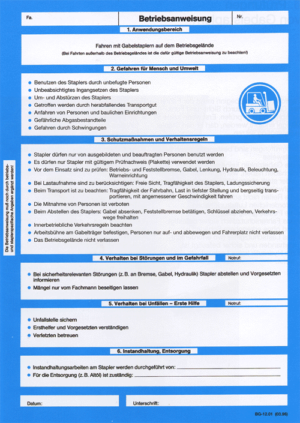
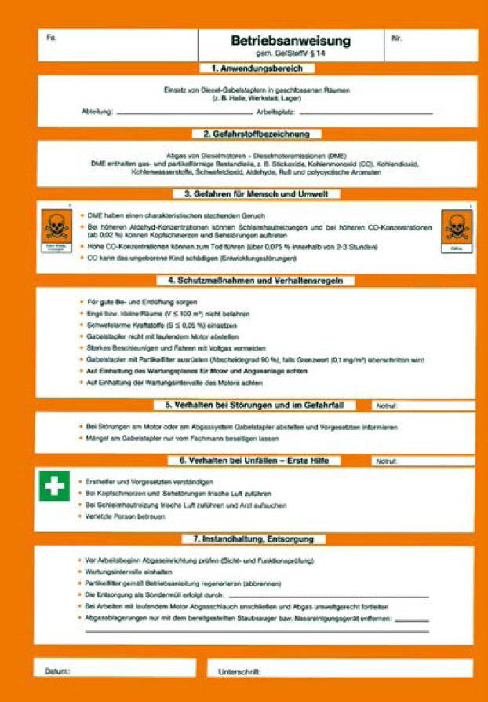

4 Betriebsanweisung
Für den Betrieb von Gabelstaplern ist vom Unternehmer eine schriftliche Betriebsanweisung zu erstellen und an geeigneter Stelle in der Arbeitsstätte bekannt zu machen.
In der Betriebsanweisung sind die genannten
technischen Hinweise der
Betriebsanleitung des Herstellers oder
Lieferanten des Gabelstaplers sowie
die örtlichen und betrieblichen Gegebenheiten
zu berücksichtigen.
Die Betriebsanweisung sollte insbesondere enthalten:
- Benennung der bestimmungsgemäßen Verwendung, Hinweise auf unzulässige Verwendung,
- Hinweise auf die Benutzung der Fahrerrückhalteeinrichtung,
- innerbetriebliche Verkehrsregelungen (z. B. Einfahrverbot in bestimmte Bereiche),
- Informationen zur Lager- und Stapelordnung,
- Voraussetzungen für die Mitfahrt von Personen, ggf. auch das Verbot,
- Regeln beim Einsatz der Arbeitsbühne,
- Besonderheiten spezieller Anbaugeräte,
- Angaben zur Benutzung von Anhängern,
- Hinweise zum Befahren von Regalanlagen mit Schmalgängen,
- bei Fahrzeugen mit Verbrennungsmotor organisatorische Maßnahmen zur Immissionsminderung, z. B. Motorwartung, Abstellbereiche und
- Hinweise auf Maßnahmen gegen gesundheitsschädliche Vibrationen, z. B. Sitzeinstellung, angepasste Fahrweise.

Beispiel einer Betriebsanweisung

Beispiel einer Betriebsanweisung